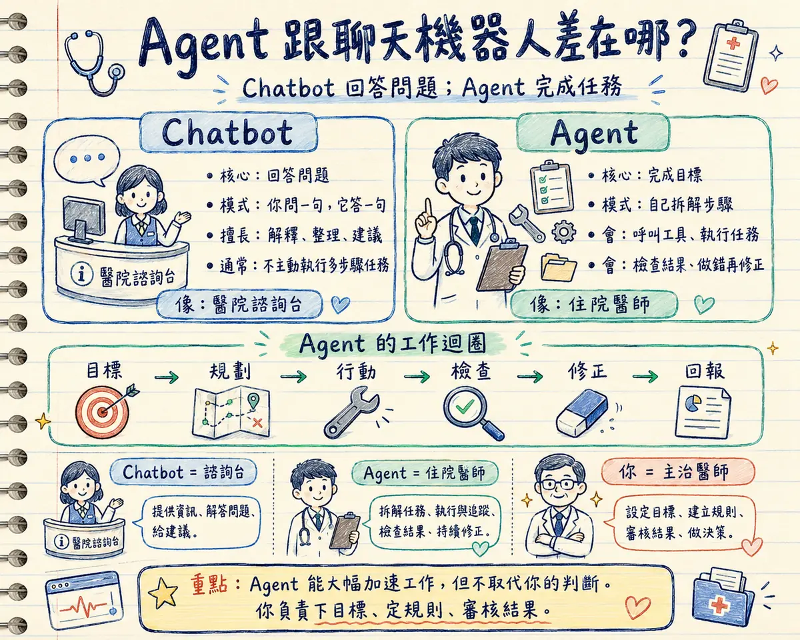
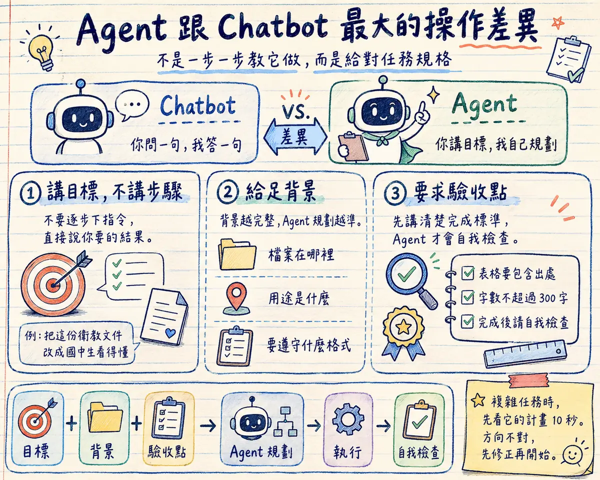
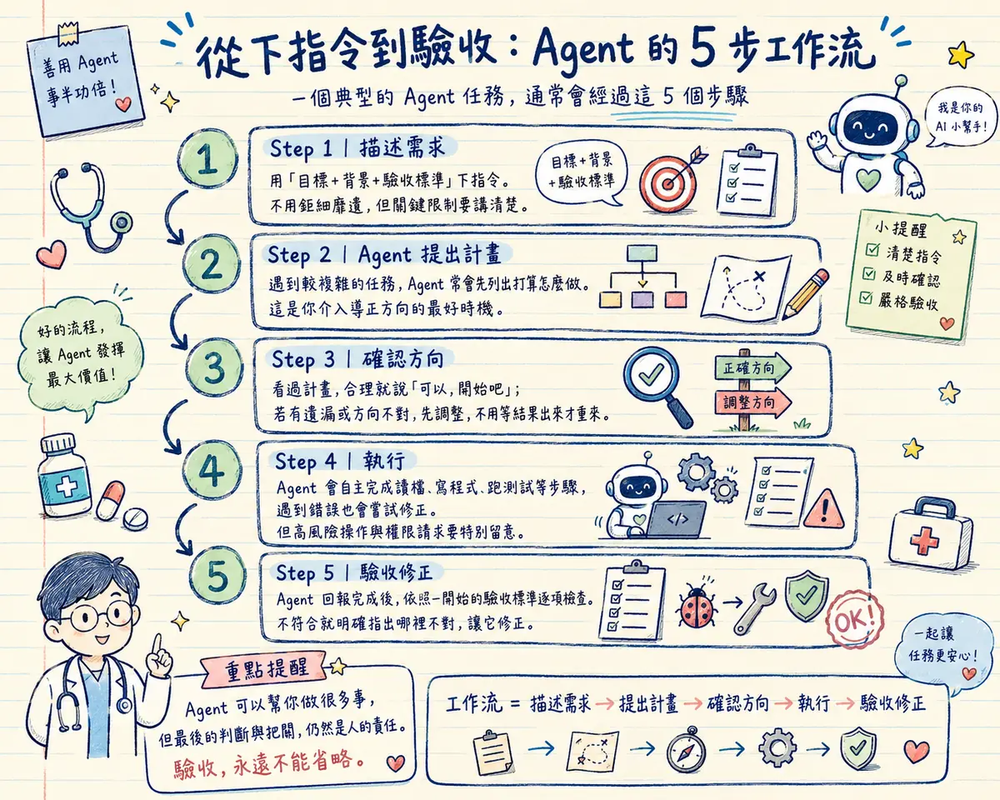
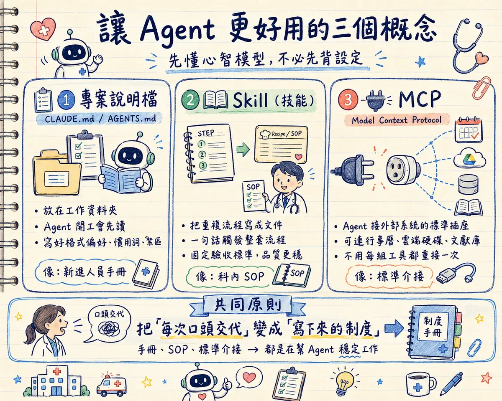
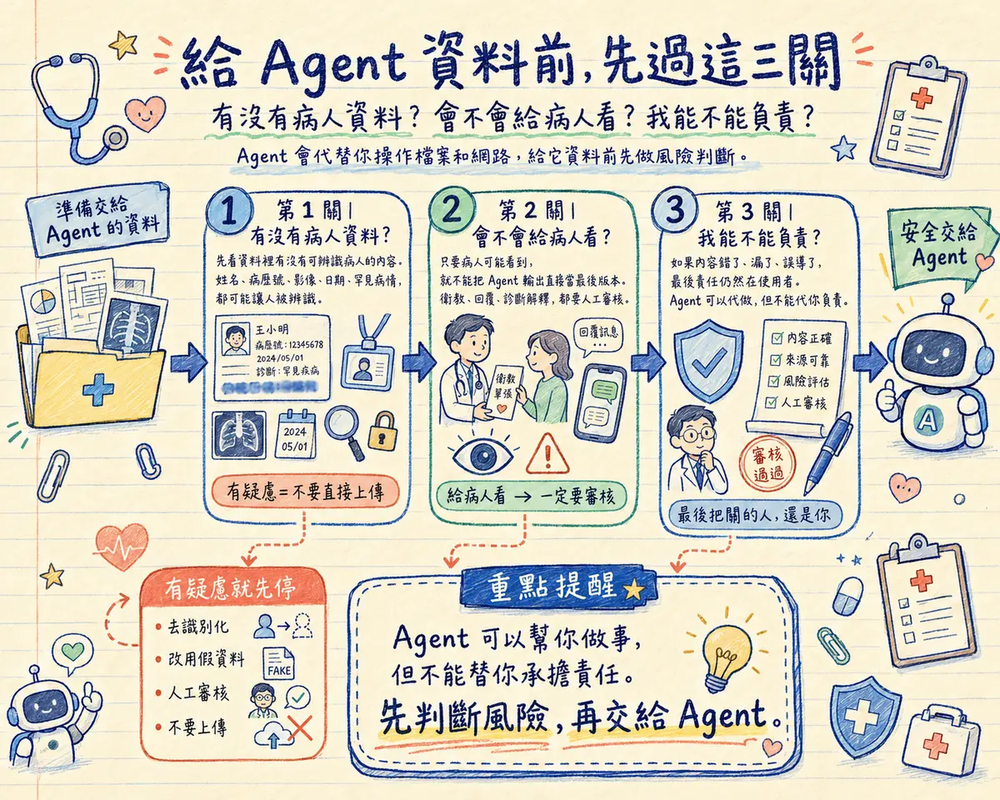

- 這頁教什麼：Agent 跟聊天機器人的差異、Claude Code／OpenAI Codex／Google Antigravity 三種代表性工具、下第一個指令的三要素、醫療人員實用範例、五步工作流，以及 Vibe Coding 與安全責任。
- 適合誰：已讀過前面課程、想開始用 AI Agent 自動完成任務的醫療人員，不需要程式背景。
- 注意：病人資料絕不能餵給 AI 或讓 Agent 讀取，Agent 的輸出一定要人工驗證，內容是否正確、能不能用在病人身上，責任永遠在使用者身上。
🔒 3 秒安全檢查
有沒有病人資料？會不會給病人看？我能不能負責？— Agent 會代替你操作檔案和網路，給它資料前先過這三關，任何一題讓你猶豫，先回 Part 3 — AI 安全與隱私。
Agent 跟聊天機器人差在哪
Part 1 提過，Agent = AI 模型 + 工具使用能力 + 自主規劃能力。這裡把差異講清楚：
ChatGPT、Gemini 這類聊天機器人（Chatbot）只會做一件事 — 回答你的問題。你問，它答，僅此而已。它不能自己打開檔案、不能自己執行程式、不能自己檢查結果對不對。
Agent 不一樣。給它一個目標，它會自己規劃步驟、呼叫工具（讀寫檔案、上網查資料、執行程式碼）、檢查自己做得對不對，做錯了再自己修正 — 直到任務完成才回報你。
Agent 像住院醫師 — 你交代「幫這床病人排腹部超音波」，他會自己開單、聯絡排程、追蹤結果、寫進病歷。
而你是主治醫師 — 住院醫師做得再快再多，最後醫囑對不對、要不要簽核，責任都在你身上。
這正是本節要建立的心態：Agent 能大幅加速工作，但它不會取代你的判斷。你負責下達清楚的目標、審核它的計畫、驗收最終結果。

上面的對照是為了幫你建立觀念，但實際產品的分界已經愈來愈模糊：各家 AI 應用陸續把 Agent 能力放進聊天視窗 — 你看到的介面仍然是一問一答，背後卻已經能自主規劃步驟、操作工具。例如 OpenAI 於 2026 年 7 月推出 ChatGPT Work，把聊天機器人 ChatGPT 與程式開發工具 Codex 結合，讓不會寫程式的一般工作者也能使用 Agent 的能力；這被視為對 Anthropic 同年 1 月推出、能自主規劃並執行多步驟任務的 Claude Cowork 的直接回應，兩者同時也與微軟的 Copilot Cowork 競爭。因此，判斷你面前的工具是 Chatbot 還是 Agent，不要只看介面外觀，而是看它能不能自己動手完成多步驟任務。
三種代表性工具
本課示範三個代表性的 AI Agent 工具（這個領域變動很快，重點是理解工作型態，不是背排行榜）。三者都提供桌面應用程式，初學者從桌面版入門最容易；熟了之後也都有終端機（CLI）、IDE 等介面可選。安裝後直接在你的電腦上操作檔案與程式：
📅 資訊更新於 2026 年 7 月 — 方案名稱、額度與介面持續變動，以官方公告為準。
- 桌面版、終端機、編輯器皆可用，直接操作檔案、執行指令
- 包含在既有的 Claude 訂閱方案內，不需額外購買
- 規劃與說明清楚，適合非工程背景使用者
- 網路上的教學多以終端機版為主，桌面版資源較新較少
- 免費方案額度有限，重度使用建議付費方案
- 工具本身可免費下載
- 包含在 ChatGPT 訂閱方案內（含免費／Plus／Pro 等分層）
- 可在桌面應用程式、網頁、CLI、IDE 外掛多種介面使用
- 實際可用額度依你的 ChatGPT 方案而定
- 介面與指令風格跟 Claude Code 略有差異，需要重新適應
- 以桌面 IDE 為主要形式，圖形介面完整
- 個人使用者可免費試用（公開預覽階段）
- 與 Google 帳號整合，容易上手
- 仍在公開預覽階段，功能與穩定度可能持續調整
- 進階使用額度需搭配 Google 的付費方案
三者核心能力相近（都能讀寫檔案、執行程式、自主規劃），建議從你原本就有訂閱的服務開始：已經是 Claude Pro/Max 用戶就用 Claude Code，已經是 ChatGPT Plus 用戶就用 Codex，想要免費先試手感就用 Antigravity。
第一次對話就上手
Agent 跟 Chatbot 最大的操作差異：你不需要（也不應該）像教學生一樣一步一步下指令。給對三個要素，Agent 自己會規劃步驟。
不要說「先開檔案，再找到第三段，然後把它改成…」。直接說「幫我把這份衛教文件的用詞改成國中生看得懂的程度」。步驟交給 Agent 規劃。
告訴它檔案在哪裡、這份東西的用途、有沒有既有格式要遵守。背景資訊越完整，Agent 規劃得越準，你要來回修正的次數越少。
明確說出「完成後我要檢查什麼」，例如「表格要包含出處」「字數不超過 300 字」。Agent 做完會依你給的標準自我檢查，而不是猜你要什麼。

醫療人員實用範例
以下範例都刻意設計成「不需要真實病人資料」也能操作 — 記得先讀完下一節「安全與責任」再套用到實際工作。
情境一：整理文獻重點成表格
情境二：把衛教內容做成投影片／網頁
情境三：批次整理檔案／資料（已去識別化）
完整工作流示範
一個典型的 Agent 任務，從下指令到驗收，大致會經過這五步：
用「目標＋背景＋驗收標準」的格式下指令（見上一節）。不需要鉅細靡遺，但關鍵限制要講清楚。
遇到較複雜的任務，Agent 通常會先列出打算怎麼做，而不是悶頭直接動手。這是你介入導正方向的最好時機。
看過計畫，覺得合理就說「可以，開始吧」；覺得漏了什麼或方向不對，直接指出來讓它調整計畫，不用等結果出來才重來。
Agent 自主完成讀檔、寫程式、跑測試等步驟，過程中若遇到錯誤會自己嘗試修正。可以暫時轉做別的事，但要留意它跳出的權限請求（要動哪個資料夾、要執行什麼指令）— 高風險操作（刪檔、對外發送）不要順手全部按同意。
Agent 回報完成後，用 Step 1 定的驗收標準逐項檢查。不符合就明確指出哪裡不對，讓它修正 — 這一步永遠不能省略。

Vibe Coding — 用講的寫程式
上一節那種做法 —全程用自然語言描述需求，程式碼交給 AI 寫，人只驗收結果— 有個正式名字：Vibe Coding。這個詞由知名 AI 研究者 Andrej Karpathy 在 2025 年初提出，如今已是主流工作型態。
對醫療人員的意義很直接：寫程式的能力不再是做出軟體的門檻，你的領域知識才是。知道衛教單張該長什麼樣、門診流程哪裡卡、品管報表要看哪些欄位 — 這些是 AI 沒有的；而「把想法變成能用的工具」這一段，現在用講的就可以。
衛教網頁、簡報、個人小工具、資料整理腳本 — 錯了看得出來、重做成本低的東西。這個網站本身就是這樣做出來的。
要接醫院系統、會碰到病人資料、出錯會影響臨床的軟體 — 這類仍需資訊部門正規開發與資安審查，不是自己 vibe 一個就上線。
讓 Agent 更好用的三個概念
開始實際使用 Agent 之後，你會在工具介面和網路文章裡反覆撞到這三個詞。這裡不教設定，只給你正確的心智模型 — 知道它們是什麼、解決什麼問題，需要時再查各工具的官方說明。
放在工作資料夾裡的一份說明文件，Agent 每次開工都會自動先讀。你的格式偏好、慣用詞彙、絕對不能碰的禁區，寫一次就不用每次重講。
像科室的新進人員手冊 — 交班規則、報告格式寫清楚，每個新來的人自己看，不用口頭重教一遍。
把一套重複的工作流程寫成文件教給 Agent，之後一句話就能觸發整套流程 — 例如「照我的衛教單流程做一份糖尿病飲食版」。
像科內的 SOP 手冊 — 流程和驗收標準定案一次，全科照做，品質穩定。這也正是上一節說的：把驗收標準固定下來，是委派做得好的關鍵。
Model Context Protocol，讓 Agent 接上外部系統（行事曆、雲端硬碟、文獻資料庫）的標準轉接頭 — 各家工具、各種系統照同一個規格對接，不用每對組合都重做一次。
Part 1 講過：harness 是包在 AI 模型外面的那層制度，決定它能用哪些工具。MCP 就是這層制度接外部工具用的標準插座。

安全與責任
這是本頁最重要的一節。Agent 能操作檔案、能讀取任何你給它權限的資料夾內容 — 這代表資安與病人隱私的風險，跟單純聊天問答完全不同等級。
病人資料絕不餵給 AI
病歷、檢驗數據、影像、任何可識別病人身分的資訊（姓名、病歷號、身分證字號、出生年月日、住址、聯絡方式），絕對不要貼進任何 AI 工具，也不要讓 Agent 讀取包含這些資訊的原始檔案。
需要處理真實病人相關資料時，務必先完成去識別化（移除或替換所有可識別身分的欄位）再交給 AI 處理，並遵守所屬機構的個資與資安規範。有疑慮時，先詢問單位的資訊室或法務。
ai-workspace）放這次任務需要的檔案，讓 Agent 只在裡面工作 — 不要讓它讀整個桌面、Downloads 或院內同步資料夾（那裡面有什麼你自己都不一定記得）。重要檔案先複製一份進去再操作，原檔不動。

還不想安裝任何東西？用 ChatGPT／Claude 網頁版模擬也可以：請 AI 先列出「執行計畫、驗收標準、風險清單」，你再照計畫人工執行 — 練的是同一種委派與驗收思維。